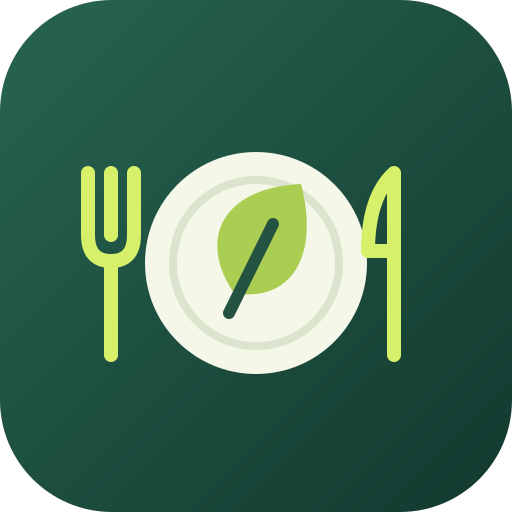

MO
Nudeln mit TomatensoßeRohkost · 37 Kinder
✓Gerichte auf die Woche verteilen
Wähle für Montag bis Freitag ein Rezept, übernimm die Vorwoche oder markiere einen Tag ohne Kochen.

KüchenplanVON DER WOCHENIDEE ZUM EINKAUFSWAGEN
Küchenplan verbindet Gerichte, Rezepte, Portionen und Allergene. Aus deinem Wochenplan entsteht automatisch eine zusammengefasste Einkaufsliste.
ALLES HÄNGT ZUSAMMEN
Jedes Rezept kennt seine Zutaten und Grundmenge. Küchenplan rechnet daraus die benötigten Mengen für jeden einzelnen Tag und fasst gleiche Zutaten für den Einkauf zusammen.
SO FUNKTIONIERT’S
Wähle für Montag bis Freitag ein Rezept, übernimm die Vorwoche oder markiere einen Tag ohne Kochen.
Speichere Zutaten, Grundportionen, Beilage und Allergene. Rezepte lassen sich ansehen, bearbeiten und duplizieren.
Die App bündelt Zutaten nach Kategorien und Mengen. Im Laden hakst du jeden Artikel direkt ab.
PORTIONEN PRO TAG
Passe die Kinderzahl für die ganze Woche oder für einzelne Tage an. Küchenplan skaliert jede Zutat auf Basis der Rezeptmenge neu und hält den Einkauf aktuell.
FÜR KÜCHE, ELTERN UND ABLAGE
Erstelle einen Essensplan mit Gerichten und Allergenen oder eine Einkaufsliste mit zusammengefassten Mengen und Vorratsnotizen. Beides lässt sich drucken oder als PDF speichern.
DEINE DATEN, DEINE DATEI
Rezepte, Wochenpläne und Notizen werden lokal auf dem Gerät gespeichert. Mit einer Sicherungsdatei kannst du den gesamten Stand archivieren oder in einen anderen Browser übertragen.
BEREIT FÜR DIE NÄCHSTE WOCHE?
Öffne Küchenplan im Browser und stelle dein erstes Kita-Menü zusammen.
Küchenplan öffnen